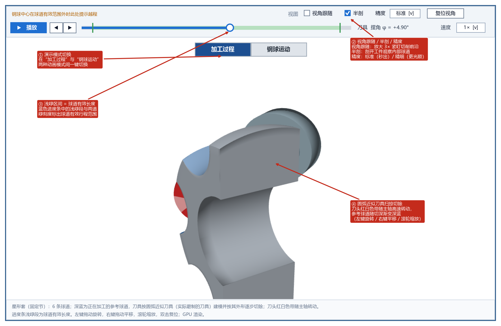
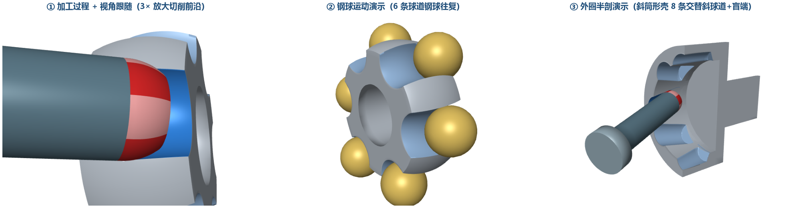

5.7 Tab 7：三维演示 (Ctrl+7)
三维演示 标签页利用 OpenGL 3.3 GPU 硬件加速（4× MSAA 多重采样抗锯齿 + 平滑法向着色），实时呈现整件工件（含全部球道）、成型刀具或钢球的三维空间相对运动与逐步切削效果。

一、两种三维演示模式（顶部浮空切换条）
在三维绘图区顶部正中央浮有切换条，可在以下两种演示模式间一键切换：
| 演示模式 | 核心展示内容 | 颜色编码与物理意义 |
|---|---|---|
加工过程（默认） |
按 Tab 6 圆弧近似刀具 的实际磨制刀具模型，沿参考球道（深蓝色）从行程起点扫掠至终点，实时按刀具外形逐步切除工件材料 | • 刀头红白色带：随主轴高速旋转，直观分辨切削前沿与刃口旋转扫掠； • 参考球道：已切出区段渐变深蓝（ #2f7fd8），其余球道显示浅蓝已成品状态。 |
钢球运动 |
所有球道全部处于已加工成品状态，各球道内的金色钢球同步沿球道轨迹做往复运动演示 | 用于检查全周向 6 条 / 8 条球道的空间排布（如 VL 斜球道的左右旋交替斜交排布与钢球防碰，非万向节整套运动学）。 |

上图依次展示：①
加工过程 + 视角跟随（3× 放大切削前沿细节）、②钢球运动（6 条球道钢球往复） 与 ③ 扩展工件外圈半剖（斜筒形壳8 条左右旋交替斜球道及盲端自然收尾）。
二、顶部控制栏与进度条功能详解
1. 上行：视图控制与网格精度
视角跟随：勾选后将视野中心自动锁定在正在切削的刀具虚拟钢球中心（或参考球道钢球中心），并自动放大 3 倍 紧盯切削前沿与刀背间隙；半剖：仅显示 一侧半边工件，沿着过参考球道的剖切面直接观察内腔深处的球道形状与伸入刀具（外圈件尤为实用，如斜筒形壳默认开启半剖）；精度（标准/精细）：标准（默认）：随主计算瞬间秒出，转动与播放可达 60 FPS；精细：在后台线程静默生成超高密度加密网格后无感切换，适合高清特写截图与细致检查曲率过渡；
复位视角：一键恢复默认三维观察方位、缩放比例与平移偏移（或直接左键双击三维画面）。
2. 下行：动画播放与行程进度条
▶ 播放/⏸ 暂停与单步按钮（◀/▶）：控制连续播放，或在暂停后逐帧微调进度（整个循环等分为300步）；进度条（浅绿区间 = 球道有效长度）：- 进度条总行程完整覆盖从切入端之外到切出端之外的进出口预备段，而中间的浅绿色区段与两道绿刻度专门标出球道在零件上的有效工作长度；
- 当将滑块拖到浅绿区段之外（切入端前或盲端后）时，左上角自动弹出橙色提示：
钢球中心在球道有效范围外；
- 右侧实时读数与
速度：实时显示当前处于圆弧摆角φ（如+4.90°）或直线沿球道距离s (mm)；支持0.25×/0.5×/1×/2×四挡倍速。
三、鼠标操作与硬件兼容说明
- 三维鼠标交互：
- 鼠标左键拖动：自由旋转三维观察视角；
- 鼠标右键 / 中键拖动：在屏幕平面内平移场景中心；
- 鼠标滚轮：无级放大与缩小视野；
- 鼠标左键双击：立即复位至初始默认视角。
- 图形渲染引擎：
- Windows 独立显卡或主流核显默认启用 OpenGL 3.3 GPU 渲染，底栏注明
GPU 渲染，拖拽与动画极其流畅； - 若在无 OpenGL 3.3 支持的老旧电脑或精简远程桌面环境中运行，软件会自动安全回退至
matplotlib软件渲染模式（bottom 栏显示matplotlib 渲染），同样保留全部视图、半剖与单步功能；也可通过系统环境变量TRACKFORM_3D=mpl强制指定软件渲染。
- Windows 独立显卡或主流核显默认启用 OpenGL 3.3 GPU 渲染，底栏注明